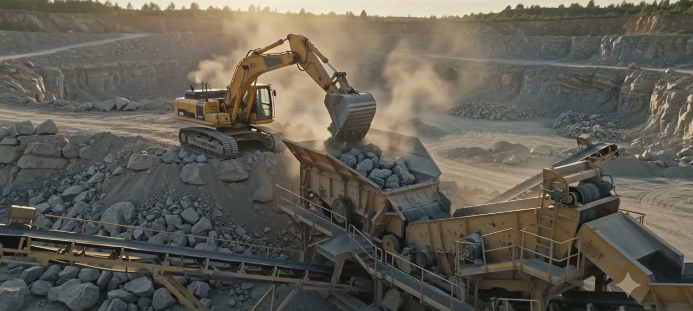
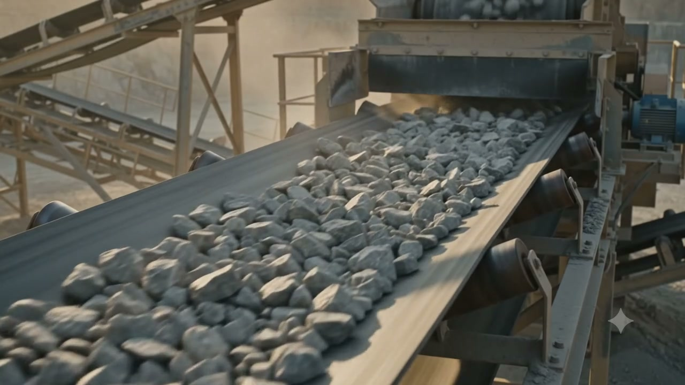
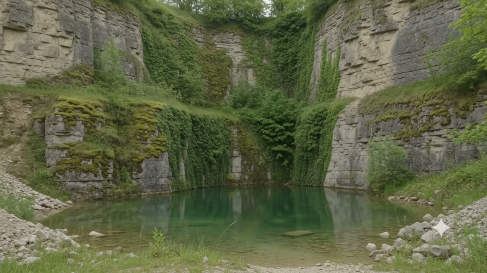
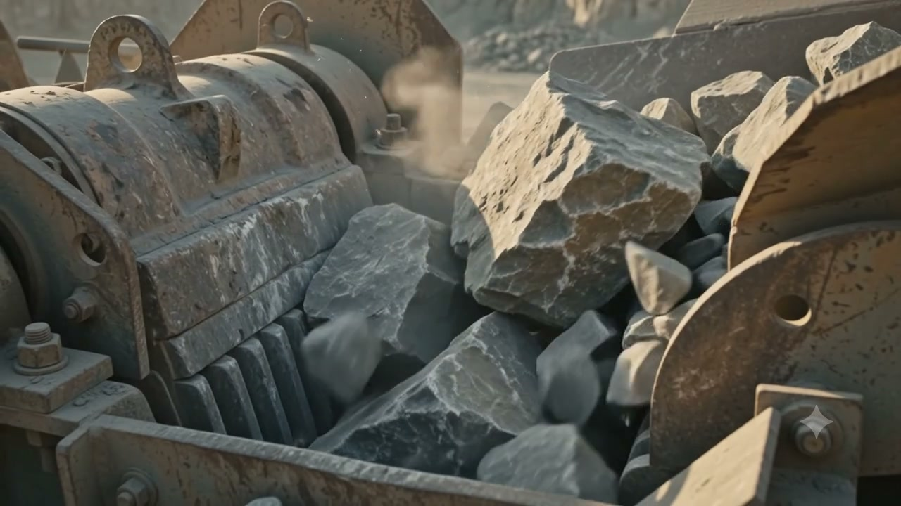
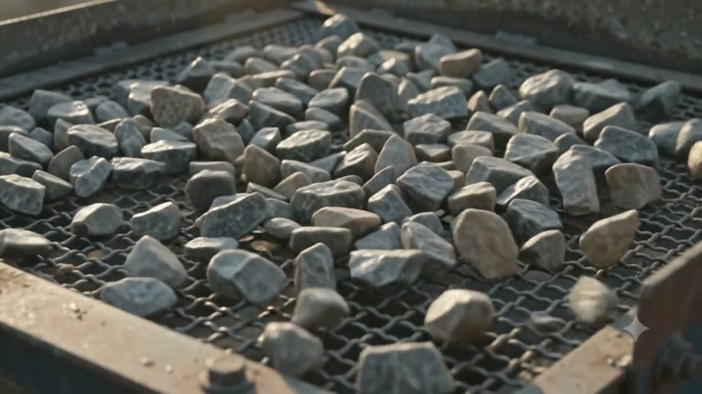
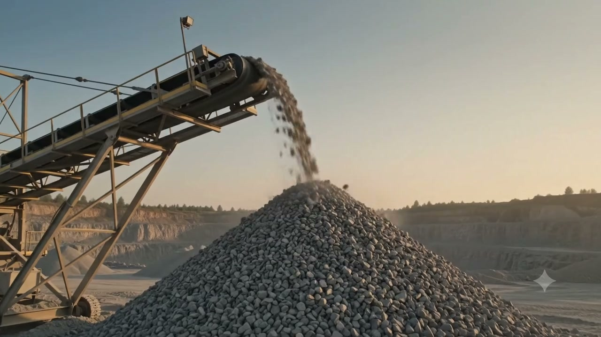
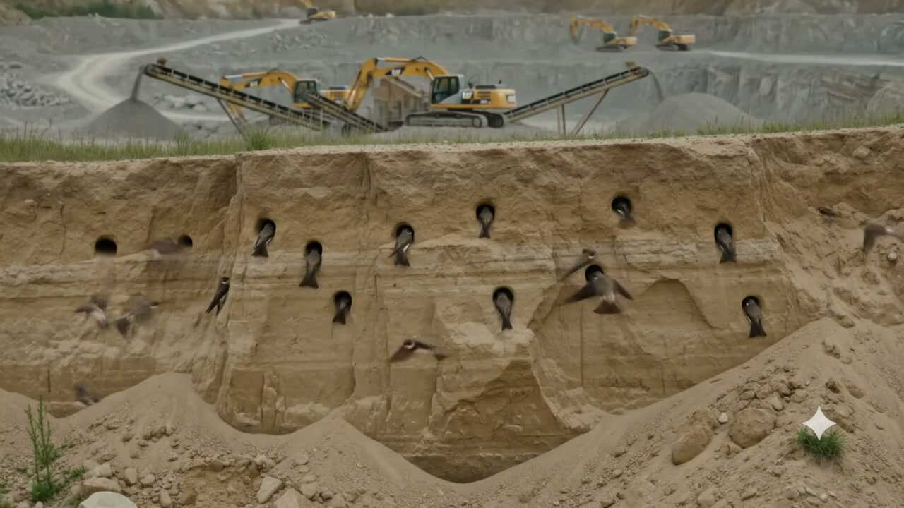

Responsible practice
Encourage responsible quarrying, environmental protection and sound professional conduct.
Aggregate & M sand Manufacturers Association
AMSMA is set up to advance knowledge, standards and environmental responsibility across India’s aggregate and M sand sector.
Our work and priorities
The Association’s governing objects connect sector development with public benefit and provide a clear framework for its programmes, partnerships and advocacy.

Encourage responsible quarrying, environmental protection and sound professional conduct.

Support technical exchange, research, education, quality and ethical practice.

Advance conservation and site-aware management within the Association’s public-benefit purpose.
Membership
AMSMA membership connects eligible aggregate businesses, consultants, equipment suppliers, transporters, research bodies and educational institutions.
Explore the four categories, annual subscriptions and the committee-led application process. Payment is collected only after an application is approved.
Responsible extraction
Modern aggregate production follows a connected sequence of extraction, crushing, conveying, screening and stockpiling.
Machinery removes and loads rock at the quarry face.

Step 02Crushing equipment reduces the extracted rock.

Step 03Conveyors move material through visible screening stages.

Step 04Finished aggregate is placed in separate stockpiles.

Living landscapes
Some quarry landforms can provide exposed banks, water bodies or vegetated ledges that wildlife can use. Ecological value depends on local conditions, species, operations, planning and long-term management.
Effective stewardship begins with site-specific ecological assessment, responsible operating plans and long-term management.